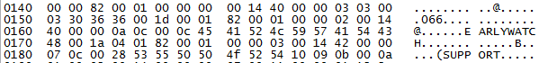
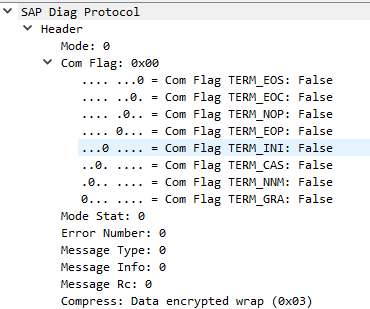
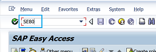

SAP
Table of content
MSF Plugin
Enumeration
auxiliary/scanner/sap/sap_icm_urlscan
Scan unauthenticated SAP URI. It can find some administration without access control.
It could be then interesting to run a webscreenshotter on these URL to easily detect sensitive accessible pages.
auxiliary/scanner/sap/sap_icf_public_info
Retrieve SAP publicly available information such as SAP service exposed, database server, mandant, etc...
Brute force
SAP implement anti-bruteforce mecanism, be careful or you will lock all your accounts
auxiliary/scanner/sap/sap_web_gui_brute_login
Perform a PING RFC request with Authorization header (base64(username:password))
Standard exploits
It can be usefull to launch these exploit. However, these exploits can triggered SOC alerts
exploit/multi/sap/sap_soap_rfc_sxpg_call_system_execexploit/multi/sap/sap_soap_rfc_sxpg_command_execauxiliary/scanner/sap/sap_soap_rfc_dbmcli_sxpg_call_system_command_execauxiliary/scanner/sap/sap_soap_rfc_dbmcli_sxpg_command_execexploit/windows/http/sap_host_control_cmd_execexploit/multi/sap/sap_mgmt_con_osexec_payloadexploit/windows/http/sap_configservlet_exec_noauthexploit/windows/misc/sap_netweaver_dispatcher
SAP service
gSOAP
- Port :
5X013
The X value is the number of the SAP instance
The WSDL file can be downloaded at :
http://ip:50013/IciActionItemService/IciActionItemConf?wsdl
It is possible to download Java SAP administration console with an HTTP request
wget ip:5X13/sapmc.jar -o sapmc.jar
wget ip:5X13/sapmcsoap.jar -o sapmcsoap.jar
wget ip:5X13/sapmcswing.jar -o sapmcswing.jar
wget ip:5X13/frog.jar -o frog.jar
Then, the application can be launched using :
java -classpath "./sapmc.jar;./sapmcsoap.jar;./sapmcswing.jar;./frog.jar" com/sap/managementconsole/swing/main/ManagementConsole
Web interface
To loggin through the web interface go on the URI /WEBGUI
Several administration pages are exposed as webservice (WebDynPro)
Thick client
SAP communication are usually performed on port 3201. The data flux is compressed, but Wireshark plugins can decompress the data on the fly.
https://github.com/SecureAuthCorp/SAP-Dissection-plug-in-for-Wireshark
Just download the dll in the release section and copy it here
%wireshark%/plugins/cpan/
Once, network packets decompressed, it could be possible to see connection informations as it is shown in the following figure :

The figure shows the connection of the user EARLYWATCH on the mandant 066 using the password SUPPORT
The following figure shows the Wireshark result if packets are ciphered:

RFC
RFC are SOAP request allowing to mimic some actions performed by SAP transaction such as displaying table, retrieving information...
Display table
The following request can be used to display an SAP table through RFC
<?xml version="1.0" encoding="utf-8" ?>
<env:Envelope xmlns:xsd="http://www.w3.org/2001/XMLSchema" xmlns:env="http://schemas.xmlsoap.org/soap/envelope/" xmlns:xsi="http://www.w3.org/2001/XMLSchema-instance">
<env:Body>
<n1:RFC_READ_TABLE xmlns:n1="urn:sap-com:document:sap:rfc:functions" env:encodingStyle="http://schemas.xmlsoap.org/soap/encoding/">
<DELIMITER xsi:type="xsd:string">
|
</DELIMITER>
<NO_DATA xsi:nil="true"></NO_DATA>
<QUERY_TABLE xsi:type="xsd:string">TABLE NAME</QUERY_TABLE>
<DATA xsi:nil="true"></DATA>
<FIELDS xsi:nil="true">
<item>
<FIELDNAME>FIELD TO DISPLAY</FIELDNAME>
</item>
</FIELDS>
<OPTIONS xsi:nil="true"></OPTIONS>
</n1:RFC_READ_TABLE>
</env:Body>
</env:Envelope>
To minimize the number of result displayed, it is possible to add the <ROWCOUNT>10</ROWCOUNT> tag before the closing RFC_READ_TABLE tag.
SAP table
User information
USR02
This table contains the username, password and role of the users.
BNAME: Field storing the usernameBCODE: Field storing the password hash keyPASSCODE: Field storing the password hash (SHA1 - 160bits)PWDSALTEDHASH: Field storing the password hash (Various hash algorithm)UFLAG: Field storing the user lock status
0 : Account unlocked
32 : Locked by CUA central administration
64 : Locked by administrator
128 : Locked after failed logon
When retrieved through RFC, BCODE and PASSCODE will be trucated and it hardly possible to retrieve the password. However, the PWDSALTEDHASH can be completely retrieved through RFC and thus be cracked using hashcat.
# Create a wordlist with base words stored in file.txt and apply hashcat rules on it
git clone https://github.com/praetorian-inc/Hob0Rules
hashcat -r Hob0Rules/d3adhob0.rule --stdout file.txt > wordlist.txt
# Launch hascat with wordlist
hashcat -m 10300 hash.txt wordlist.txt -o cracked.out --force
UST04
This table allows to map profile with users.
BNAME: Field storing the usernamePROFILE: Field storing the profile name
AGR_PROF
This table is used to store Profile name for role data.
PROFILE: Field storing the profile nameAGR_NAME: Field storing the role name
USR40
This table allow to password restriction. Every value entered in the table will be forbidden as password. Foor example, if the value AB*is entered, every password beginning with AB will be denied.
Functionnal table
These table containes sensitive buisness information such as worker salary.
PA0008
This table contains the detail of basic pay (worker salary for example)
PERNR: Field storing the personnal numberBET01: Field storing the wage type amount for paymentsENDDA: Field storing the end dateBEGDA: Field storing the start date
System table
RFCDES
This table contains the RFC connections declared
RFCDEST: Field storing the logical destination of the RFC connexion
Transactions
On the thick client, transactions can be run as it is shown in the following figure :

SUIM
User information system
RSUSR003
Check standard user password
ST04
Database performance monitor
Allows execution of row SQL query and can be used to rebound from one mandant to another
SE17
General table display
Can be used to partially retrieve de user database
SE16
Display table content
Can be used to partially retrieve de user database
SM49
Execute logical command
SM59
RFC destination (Display/Maintain)
Allows to display RFC connections and the links between different systems
Configuration review
Password policy
The pasword policy can be explored through the RZ11 transaction and by looking at the following parameters
login/failed_user_auto_unlock
login/fails_to_user_lock
login/min_password_diff
login/min_password_digits
login/min_password_letters
login/min_password_lng
login/min_password_lowercase
login/min_password_specials
login/min_password_uppercase
login/no_automatic_user_sapstar
login/password_compliance_to_current_policy
login/password_downwards_compatibility
login/password_expiration_time
login/password_history_size
User able to run a given transaction
It is possible to retrieve users that has the privileged need to run a given transaction through the SUIM transaction and by following this scheme:
SUIM > User > User with complexe criteria > By transaction autorisation
It is interesting to look at the SM49, SE16 and the ST04 transaction.
References
- Search field or tables : https://www.se80.co.uk/sap-tables/list/
- Seach for transaction : https://www.se80.co.uk/sap-tcodes/list/
- Administration transaction list : https://wiki.scn.sap.com/wiki/display/ABAP/Useful+SAP+System+Administration+Transactions?original_fqdn=wiki.sdn.sap.com&showComments=false
- Password security : https://blogs.sap.com/2020/06/25/sap-password-hashes-security/